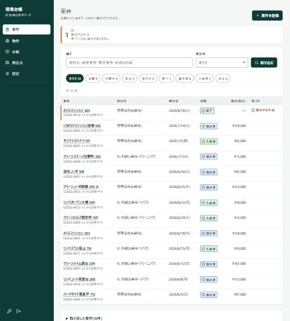
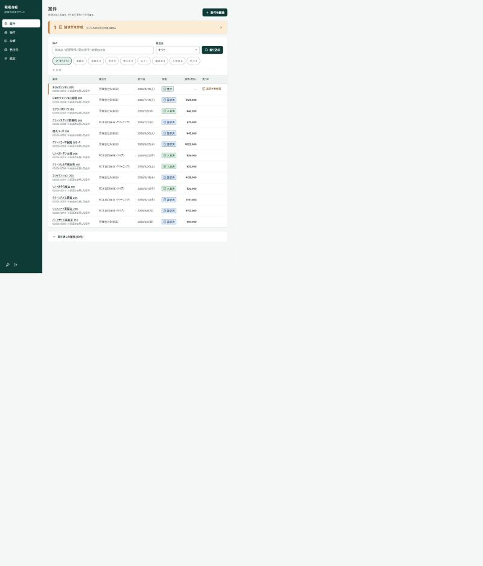
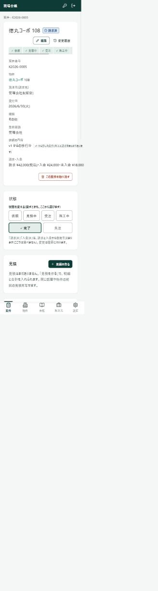
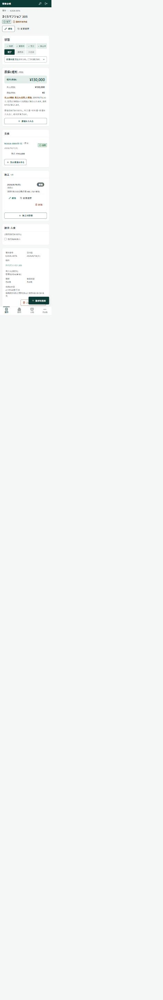
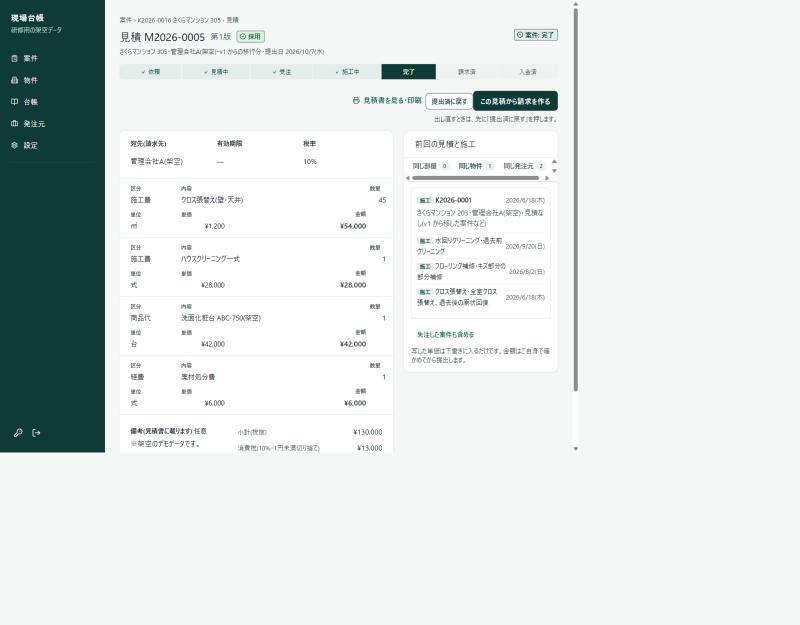
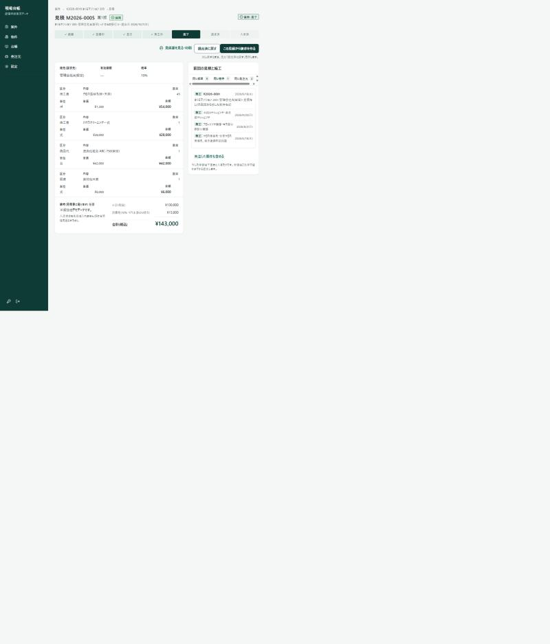

現場台帳 ビフォーアフター
研修(10/8)に向けて、案件の一覧・案件の詳細・見積の3画面の見た目を直しました(WO-012 段階C-1)。機能・文言・URL・データは変えていません。見た目と配置だけです。いまはプレビュー用のブランチで、本番にはまだ入っていません。
まず結論: 何が変わったか(3つ)
- 「次に何を押すか」が1つに絞られた。 以前は濃い緑のボタンが同じ画面に2〜3個あり、どれが主か分からなかった。いまは「その状態の次の一手」だけが濃い緑(例: 完了した案件=「請求を追加」)。
- 大事な数字が目に入る。 粗利・見積の合計・要対応の件数を、大きい文字と色の帯にした。以前は小さい文字で、他の項目と同じ強さだった。
- スマホで読める・押せる。 文字は最小14px、ボタンは44px以上。スマホの案件詳細で「請求済・入金済」が画面の右に切れていた不具合も直した。
数字で比べる(計測値)
同じ画面を、同じ方法(ブラウザで文字の大きさ・ボタンの高さ・主ボタンの数・横スクロールを測る)で計測しました。「前」は 10/6 の棚卸し、「後」は今日の計測です。
| 画面 | 項目 | 前 | 後 |
|---|---|---|---|
| 案件の一覧(PC) | 押しにくいボタン・リンク(44px未満) | 34個(44個中) | 0個 |
| 濃い緑の「主」ボタンの数 | 2個(登録と絞り込み) | 1個(案件を登録) | |
| 文字の最小サイズ | 14px | 14px(変わらず) | |
| 案件の詳細(スマホ) | 横にはみ出して画面が横に動く | あり(389px) | なし(375px) |
| 14px未満の小さい文字 | 25か所(12px 13か所・13px 12か所) | 0か所 | |
| 押しにくいボタン・リンク(44px未満) | 26個 | 2個(うち1つは旧画面の部品) | |
| 状態の流れ「請求済・入金済」 | 右に切れて見えない | 4列×2行で全部見える | |
| 見積(PC) | 押しにくいボタン・リンク(44px未満) | (未計測) | 0個 |
| 明細の見え方 | 1行が2段(項目名が小さい12px) | 1行で読める表(14〜15px) |
※ 12画面すべてで、横スクロールなし・14px未満の文字なしを確認。「後」の44px未満の残りは、旧画面の部品(台帳のチェック枠など)で、研修のあとに直します。
1. 案件の一覧(PC)
アプリの入口。「いま何をすべきか」が一覧の頭で分かる画面です。


- 「請求が未作成」の注意: 小さい注意枠 → 画面の幅いっぱいの橙の帯(件数 28px・タイトル 18px の太字+三角のアイコン)。クリックで絞り込めるのは同じ。
- 状態のチップ(すべて 13・依頼 0…): 高さ 36px → 44px。選択中は「濃い緑で塗りつぶし」→「薄い緑の地+太い枠+✓」に(塗りつぶすと主ボタンが2つあるように見えるため)。
- 「絞り込む」: 主(濃い緑)→ 副(白地+緑の枠)。主は「案件を登録」の1つだけに。
- 表: 行の高さ 60px・金額は太字で右揃え・先頭の列(物件名)全体が44pxの押せる範囲に。補足の「旧画面から移した案件」は、内部の呼び名「v1」をやめた。
2. 案件の詳細(スマホ 375px)
1件の仕事を、依頼から入金まで1画面で見る画面。現場でスマホから開くことが多い画面です。


いちばん大きい違い: 前は、上から「項目の羅列 → 状態 → 見積 → 原価と粗利 → 施工 → 請求・入金」の順で、同じ見た目の箱が続いていました。後は「状態 → 原価と粗利 → 見積 → 施工 → 請求・入金 → 項目」の順で、最初の画面に状態と粗利(¥130,000)が入ります。
- 状態の流れ: 前は右に切れて「請求済・入金済」が見えず、ページ全体が横に動いた。後は4列×2行に折り返して全部見える。今の段(完了)は濃い緑、済んだ段は✓。
- 「状態を変える」の6つのボタン: 前は常に開いていて、上の流れと二重だった。後は折りたたみ(押すと開く)。
- 粗利(税抜): 小さい文字の3つの数字 → 「粗利 ¥130,000」を28pxの帯で先頭に。売上・原価は下に小さく。
- 主ボタン: 前は「見積を作る」「施工を記録」の両方が濃い緑。後は、この案件(完了・請求なし)の次の一手の「請求を追加」だけが濃い緑で、スマホでは下ナビのすぐ上に浮いて親指で届く。他は白地+枠。
- 項目(案件番号・受付日・物件…): 縦に1項目ずつ → 2列の格子にして下へ。「v1 から移した案件」→「旧画面から移した案件」。
3. 見積(PC・採用後)
見積の明細と合計を見る画面。印刷して発注元に渡す見積書の元になります。


- 明細: 前は1つの明細が2段(区分・内容・数量が上、単位・単価・金額が下で項目名が小さい)。後は1行で区分・内容・数量・単位・単価・金額が読める表。金額は右揃えで太字。
- 合計(税込): 小さい数字 → 薄い緑の帯に 28px で ¥143,000。
- 「金額はすべて税抜です。」を表の上に1行追加(見積の税込・税抜の取り違えを防ぐため)。
※ 見積を作っている最中(下書き)の画面は、今回は直していません。Claude Design の案を待って、研修のあとに直します。
まだ直していないもの(研修のあと)
台帳・発注元・ログイン画面の見た目の載せ替え/確認のダイアログの作り直し/404・エラー・読み込み中の画面/見積の下書き(入力中)の画面/旧画面の言葉(「現場」「キャンセル」)。
この資料について
画像は、ブラウザ(縮小表示)で撮った確認用です。細かい文字がつぶれて見えます。実物の見え方は、プレビュー(Vercel)の画面で確かめてください。画像の元: poc-app/docs/screenshots/design/before-after/。